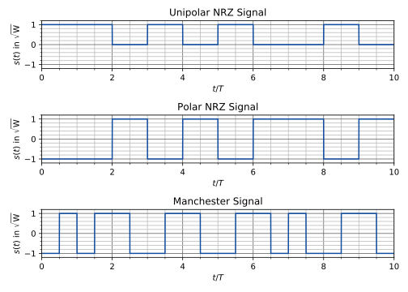

Chapter 3 Baseband Communications
Here, baseband communications (German: Basisbandübertragung) refers to the transmission of a data signal in the baseband, i.e., in a spectrum from \(0\) to \(f_\mathrm{max}=B\). Thus, no high-frequency carrier signal, which transports the information, is required. Examples of communications systems operating in the baseband are the landline phone, Ethernet, USB and hard disk storage. An alternative to baseband communications is passband communications (German: Bandpassübertragung) which will be discussed in Chapter 5.
In this chapter, we will answer the question how the digital signal \(b[k]\), resulting from PCM, is going to be transmitted over an analog baseband channel. To do so, we firstly take a closer look at modulation in the next section.
3.1 Modulation
After PCM, the resulting bit stream \(b[k]\in\{0,1\}\) is generally source and channel coded. In this course, we neglect this step and assume that \(u[k]=b[k]\in\{0,1\}\). Next, we assume that the bits in \(u[k]\) are mapped to data symbols \(d[\ell]\) (German: Datensymbole), also known as symbol mapping (German: Symbolzuordnung), in the following two ways:21
Unipolar (binary) symbol mapping: \[d[\ell] = \begin{cases} 0,& u[\ell]=0,\\ D,& u[\ell]=1, \end{cases}\]
Polar (binary) symbol mapping: \[d[\ell] = \begin{cases} +D,& u[\ell]=0,\\ -D,& u[\ell]=1, \end{cases}\]
where the unit of the peak value \(D>0\) is \([D]=1\sqrt{\mathrm{W}}\). Note that symbol mapping seems to be unnecessary at this point—which is basically true—however, it paves the way for the generalisation to arbitrary digital modulation schemes in Chapter 6.
Additionally, in order to end up with an analog and time-continuous signal, which can be applied to the analog channel, we define the data signal (German: Datensignal) \[d(t) = T\sum_{\ell=-\infty}^\infty d[\ell] \delta(t-\ell T),\] with \(T\) being the symbol duration (German: Symboldauer) or \(1/T\) being the symbol rate (German: Symbolrate).22
Example 3.1 (Symbol Mapping) In this example, we compute the symbol sequence \(d[\ell]\) and plot the data signal \(d(t)\) for the bit sequence \[\begin{aligned}b[k] &= 0\cdot\delta[k] + 1\cdot \delta[k-1] + 0\cdot\delta[k-2] + 0\cdot\delta[k-3]\\ &\phantom{=}+ 1\cdot\delta[k-4]+0\cdot\delta[k-5]+0\cdot\delta[k-6],\end{aligned}\] assuming polar symbol mapping with \(D=1\sqrt{\mathrm{W}}\) and a symbol duration of \(T=1\,\mu\mathrm{s}\).
Due to polar symbol mapping, we get the symbol sequence \(d[\ell]\) as shown in Table 3.1. The resulting data signal \[d(t)=1\,\mu\mathrm{s}\cdot \sum_{\ell=0}^6 d[\ell] \delta(t-\ell\cdot 1\,\mu\mathrm{s})\] is plotted in Figure 3.1.| \(k=\ell\) | 0 | 1 | 2 | 3 | 4 | 5 | 6 |
| \(b[\ell]\) | 0 | 1 | 0 | 0 | 1 | 0 | 0 |
| \(\frac{d[\ell]}{\sqrt{\mathrm{W}}}\) | 1 | –1 | 1 | 1 | –1 | 1 | 1 |

Figure 3.1: Data signal \(d(t)\)
Then, modulation can be summarised as shown in Figure 3.2 where pulse shaping (German: Pulsformung) transforms the data signal \(d(t)\) into the signal \(s(t)/\sqrt{\mathrm{W}}\in\mathbb{R}\) being finally transmitted over the analog channel.
Figure 3.2: Block diagram of modulation
In the next section, we focus on pulse shaping and derive some important facts in this context. Although all the following pulse shaping filters are derived as analog filters, they can be also implemented in a digital way, e.g., via a Digital Signal Processor (DSP), followed by a digital-to-analog converter.
3.2 Pulse Shaping
After pulse shaping, the transmit signal \(s(t)\) (German: Sendesignal) reads as (cf. Theorem E.2) \[\begin{align} s(t) = p(t) * d(t) &= p(t) * T\sum_{\ell=-\infty}^\infty d[\ell] \delta(t-\ell T)\nonumber\\ &= T\sum_{\ell=-\infty}^\infty d[\ell] p(t-\ell T), \tag{3.1} \end{align}\] where \(p(t)\) denotes the pulse shaping filter (German: Pulsformfilter). The purpose of this filter is to transform the weighted Dirac comb \(d(t)\) to a time-continuous transmit signal \(s(t)\). Figure 3.3 visualises the process of pulse shaping and can be seen as an alternative representation of the latter two boxes in Figure 3.2.
Figure 3.3: Block diagram of pulse shaping
In case of random data \(d[\ell]\), there exists no Fourier transform of \(s(t)\) and we need to use the Power Spectral Density (PSD, cf. Appendix E.4.11) if we are interested in the spectrum of the baseband signal. If the symbols have zero mean (cf. Appendix E.4.5), i.e., \(m_d=E[d[\ell]]=0\), the PSD \(\Phi_s(f)\) of the transmit signal \(s(t)\) computes as (see, e.g., Proakis (2000) or Proakis and Salehi (2004) for a derivation) \[\Phi_s(f) = T |P(f)|^2 E\left[|d[\ell]|^2\right],\] with \(P(f)\) being the Fourier transform of the pulse shaping filter \(p(t)\). Note that unipolar symbol mapping has a mean unequal to zero, thus, Equation (3.2) does not hold in this case,23 but polar symbol mapping has zero mean and Equation (3.2) holds with \(E[|d[\ell]|^2]=D^2\), i.e., \[\begin{equation} \Phi_s(f) = T D^2 |P(f)|^2. \tag{3.2} \end{equation}\] Therefore, with Parseval’s theorem24 \[\int_{-\infty}^\infty |P(f)|^2 df=\int_{-\infty}^\infty |p(t)|^2 dt,\] the power of the transmit signal computes to \[\begin{aligned} P_s&= \int\limits_{-\infty}^{\infty}\Phi_s(f)df\\ &=TD^2 \int\limits_{-\infty}^{\infty}|P(f)|^2df\\ &=TD^2 \int\limits_{-\infty}^{\infty}|p(t)|^2dt\\ &=TD^2\cdot\frac{1}{T}=D^2, \end{aligned}\] if we assume a normalisation of the pulse shaping filter \(p(t)\) such that \[\begin{equation} \int\limits_{-\infty}^{\infty}|p(t)|^2dt=\frac{1}{T}. \tag{3.3} \end{equation}\]
In the following, we investigate different pulse shaping filters which are time-limited, band-limited or neither time- nor band-limited.
3.2.1 Rectangular Filter or Non-Return-to-Zero (NRZ) Code
The rectangular filter (German: Rechteckfilter) or Non-Return-to-Zero (NRZ)25 code is defined as \[p(t) = \frac{1}{T}\mathrm{rect}\left(\frac{t}{T}\right) =: \begin{cases} \frac{1}{T}, & |t|\leq\frac{T}{2}\\ 0, & |t|>\frac{T}{2} \end{cases}\] \[\updownarrow\] \[P(f) = \mathrm{sinc}(f T) = \frac{\sin(\pi f T)} {\pi f T},\] and depicted in Figure 3.4. It can be seen that the NRZ code is time-limited while its spectrum is not limited. Note that a time-limited signal can never have a band-limited spectrum (cf. Section 3.3)!
Figure 3.4: Impulse response \(p(t)\) and frequency response \(P(f)\) of the NRZ code
Because of the fact that the NRZ code filter \(p(t)\) as shown in Figure 3.4 is symmetric26 with respect to \(t=0\), the corresponding frequency response \(P(f)\) is real-valued. However, this version of the NRZ code is not causal, i.e., the output of the pulse shaping filter depends on an input signal of the future. Clearly, this is not realistic. A causal version of the NRZ code filter \(p_+(t)\) with \(p_+(t)=0\) for \(t<0\) can be defined by a time translation of \(p(t)\) with a \(T/2\)-shift to the right, leading to a complex-valued spectrum with a phase term (cf. Exercise E.1). Precisely speaking, we get \[p_+(t) = \frac{1}{T}\mathrm{rect}\left(\frac{t}{T}-\frac{1}{2}\right) =: \begin{cases} \frac{1}{T}, & 0\leq t\leq T\\ 0, & \mathrm{otherwise} \end{cases}\] \[\updownarrow\] \[P_+(f) = \mathrm{sinc}(f T) e^{-j\pi f T} = \frac{\sin(\pi f T)}{\pi f T}e^{-j\pi f T}.\]
Figure 3.5: Impulse response \(p_+(t)\) and the absolute value of the frequency response \(P_+(f)\) of the causal NRZ code
Figure 3.6: Transmit signal \(s(t)\) with causal NRZ pulse shaping (unipolar and polar symbol mapping)
It can be seen that the NRZ signal has no rest or zero state like, e.g., the Return-to-Zero (RZ) code As a consequence, the NRZ code contains more energy than the RZ code.
import numpy as np
import scipy.signal as sps
import matplotlib.pyplot as plt
no_symbols = 500
T = 1e-6
Ts = 1e-7
# generate random NRZ transmit signal
t = np.linspace(0, no_symbols*T, no_symbols*int(T/Ts))
s = np.ones(int(T/Ts))
for i in range(no_symbols):
d=np.random.choice([-1, 1], size=(1,), p=[1./2, 1./2])
s=np.concatenate((s, d*np.ones(int(T/Ts))), axis=0)
# compute PSD
f, s_spec = sps.welch(s, 1/Ts, return_onesided=0)
# cut-out positive frequencies
f = f[0:int(f.size/2)]
s_spec = s_spec[0:int(s_spec.size/2)]
# compute analytical PSD
s_spec_theory = T*abs(np.sinc(f*T))**2
# plot results
dummy = plt.semilogy(f*1e-6, abs(s_spec), '#114da1', f*1e-6, s_spec_theory, '#b33333')
plt.xlabel('$f$ in MHz')
plt.ylabel('in W/Hz')
plt.minorticks_on()
plt.grid(which='major', color='#666666', axis='both')
plt.grid(which='minor', color='#BBBBBB', axis='both')
dummy = plt.xlim(0,4.5)
dummy = plt.ylim(1e-11,2e-6)
dummy = plt.legend([r'Estimate $\hat{\Phi}_s(f)$', r'Exact $\Phi_s(f)$'])
plt.tight_layout()
plt.show()
Figure 3.7: Cut-out of the two-sided PSD of a random polar NRZ transmit signal
The major advantage of the NRZ code is that its spectrum is rather concentrated around zero and it goes to zero very quickly with increasing \(f\). However, if the transmitted bit stream consists solely of ones or zeros, the transmitted signal is constant which makes it very difficult to reconstruct the clock signal based on \(s(t)\) (see also Section 4.5). The latter step is necessary at the receiver of a communications system because the clock oscillators at the transmitter and receiver are generally not the same and need to be synchronised in order to ensure error free transmission.
3.2.2 Manchester Code
Another time-limited pulse shaping filter is the Manchester code defined as \[\begin{aligned} p(t) &= \frac{1}{T}\left( 2\mathrm{rect}\left(\frac{2t}{T}\right) -\mathrm{rect}\left(\frac{t}{T}\right)\right)\\ & = \begin{cases} \frac{1}{T}, & |t|\leq\frac{T}{4}\\ -\frac{1}{T}, & \frac{T}{4}<|t|\leq\frac{T}{2}\\ 0, & |t|>\frac{T}{2} \end{cases}\end{aligned}\] \[\updownarrow\] \[P(f) = \mathrm{sinc}\left(f\frac{T}{2}\right)-\mathrm{sinc}(f T),\] and depicted in Figure 3.8.
Figure 3.8: Impulse response \(p(t)\) and frequency response \(P(f)\) of the Manchester code
Compared to the NRZ code, the causal version of the Manchester code is usually not obtained by a simple time translation. A common definition of the causal Manchester code in case of polar symbol mapping reads as (cf. Theorem E.1 and with the Euler formula \(e^{jx}=\cos x + j\sin x\)) \[\begin{aligned} p_+(t) &= \frac{1}{T}\left(\mathrm{rect}\left(\frac{2t}{T}-\frac{1}{2}\right)-\mathrm{rect}\left(\frac{2t}{T}-\frac{3}{2}\right)\right)\\ &= \begin{cases} \frac{1}{T}, & 0 \leq t\leq\frac{T}{2}\\ -\frac{1}{T}, & \frac{T}{2}<t\leq T\\ 0, & \mathrm{otherwise} \end{cases}\end{aligned}\] \[\updownarrow\] \[\begin{aligned} P_+(f) &= \mathrm{sinc}\left(f\frac{T}{2}\right)e^{-j\pi f T} \underbrace{\frac{1}{2}\left(e^{j\pi f \frac{T}{2}}-e^{-j\pi f \frac{T}{2}}\right)}_{j\sin\left(\pi f \frac{T}{2}\right)}\\ &= \mathrm{sinc}\left(f\frac{T}{2}\right)\sin\left(\pi f \frac{T}{2}\right)e^{j\pi\left(\frac{1}{2}- f T\right)}, \end{aligned}\] and is depicted in Figure 3.9.
Figure 3.9: Impulse response \(p_+(t)\) and the absolute value of the frequency response \(P_+(f)\) of the causal Manchester code
Figure 3.10: Transmit signal \(s(t)\) with causal Manchester pulse shaping and polar symbol mapping
So, in case of Manchester pulse shaping, the information about the transmitted bits are contained in the middle slope within the symbol duration \(T\). This information would be lost in case of unipolar symbol mapping because the impulse response is nulled and therefore, there is no slope, if a 0 is transmitted. Thus, for unipolar symbol mapping, the pulse shaping filter is not simply multiplied by the transmitted bit according to Equation (3.1) but defined differently depending on the transmitted bit. Figure 3.11 shows a common definition of the Manchester code in this case where the signal \(s_{0}(t)\) is transmitted if the information bit is 0 and \(s_{1}(t)\) if it is 1.
Figure 3.11: Transmitted signal \(s_{0}(t)\) and \(s_{1}(t)\) in case of causal Manchester pulse shaping and unipolar symbol mapping
import numpy as np
from scipy import signal
import matplotlib.pyplot as plt
no_symbols = 500
T = 1e-6
Ts = 1e-7
# generate random Manchester signal
t = np.linspace(0, no_symbols*T, no_symbols*int(T/Ts))
pulse = np.concatenate((np.ones(int(T/(2*Ts))), -np.ones(int(T/(2*Ts)))))
s = pulse
for i in range(no_symbols):
d=np.random.choice([-1, 1], size=(1,), p=[1./2, 1./2])
s=np.concatenate((s, d*pulse), axis=0)
# compute PSD
f, s_spec = signal.welch(s, 1/Ts, return_onesided=0)
# cut-out positive frequencies
f = f[0:int(f.size/2)]
s_spec = s_spec[0:int(s_spec.size/2)]
# compute analytical PSD
s_spec_theory = T*abs(np.sinc(f*T/2)*np.sin(np.pi*f*T/2))**2
# plot results
dummy = plt.semilogy(f*1e-6, abs(s_spec), '#114da1', f*1e-6, s_spec_theory, '#b33333')
plt.xlabel('$f$ in MHz')
plt.ylabel('in W/Hz')
plt.minorticks_on()
plt.grid(which='major', color='#666666', axis='both')
plt.grid(which='minor', color='#BBBBBB', axis='both')
dummy = plt.xlim(0,4.5)
dummy = plt.ylim(1e-11,2e-6)
dummy = plt.legend([r'Estimate $\hat{\Phi}_s(f)$', r'Exact $\Phi_s(f)$'])
plt.tight_layout()
plt.show()Figure 3.12: Cut-out of the two-sided PSD of a random polar Manchester transmit signal
Compared to the NRZ code, the clock signal can be recovered in case of Manchester pulse shaping even if only ones or zeros are transmitted. Besides, \(P(0)=0\), i.e., a Manchester signal has no bias. However, one major drawback of the Manchester code is the slightly higher bandwidth compared to the NRZ code. The first root of its spectrum is at \(f=2/T\) compared to \(f=1/T\) in case of NRZ.
Exercise 3.1 (Time-Limited Pulse Shaping Filter) Consider the following causal pulse shaping filters:
- unipolar (NRZ) code (no symbol mapping is applied, i.e., \(d_\mathrm{uni}[\ell]=Du[\ell]\in\{0,D\}\),
- polar NRZ code (\(d[\ell]\in\{-D,D\}\)) and
- Manchester code.
Based on these filters, the binary PCM stream \(u[\ell]\) as given in Table 3.2 shall be transmitted in the baseband.
| \(\ell\) | 0 | 1 | 2 | 3 | 4 | 5 | 6 | 7 | 8 | 9 |
| \(u[\ell]\) | 1 | 1 | 0 | 1 | 0 | 1 | 0 | 0 | 1 | 0 |
- What specific characteristic is the same for all pulse shaping filters? In what kind of systems are they mainly used therefore?
- Plot for all three filters the transmit signal \(s(t)=T\sum_{\ell=0}^9 d[\ell] p(t-\ell T)\) of the data stream given in Table 3.2 in the region \(t\in[0,10T]\) and with \(D=1\sqrt{\mathrm{W}}\). Compute all values for \(d_\mathrm{uni}[\ell]\) and \(d[\ell]\) (unipolar and polar symbols) first.
- Let \(T=10\,\mu\mathrm{s}\). What is the minimum necessary transmission bandwidth for all three filters
Hint: Since the considered filters are not band-limited, use the first root in the spectrum as the definition of the bandwidth. - List advantages and drawbacks for each of the filters.
All filters are time-limited to \(T\), therefore not band-limited. Due to the high bandwidth, they are used in systems where spectrum is easily available like, e.g., in optical communications systems.
Table 3.3 summarises the results for \(d_\mathrm{uni} [\ell]\) and \(d[\ell]\).
Table 3.3: Data signal \(d_\mathrm{uni}[\ell]\) and \(d[\ell]\) \(\ell\) 0 1 2 3 4 5 6 7 8 9 \(u[\ell]\) 1 1 0 1 0 1 0 0 1 0 \(\frac{d_\mathrm{uni}[\ell]}{\sqrt{\mathrm{W}}}\) 1 1 0 1 0 1 0 0 1 0 \(\frac{d[\ell]}{\sqrt{\mathrm{W}}}\) –1 –1 1 –1 1 –1 1 1 –1 1 The transmit signals corresponding to the three pulse shaping filters are shown in Figure 3.13.
Figure 3.13: Transmit signal \(s(t)\) with causal NRZ (unipolar and polar) and polar Manchester pulse shaping
With \(T=10\,\mu\mathrm{s}\), the first root in the spectrum lies at \[B_\mathrm{NRZ}=\frac{1}{T}=100\,\mathrm{kHz}\] in case of the unipolar and polar NRZ signal. Contrary to that, the first root in the spectrum of the Manchester signal lies at \[B_\mathrm{Manchester}=\frac{2}{T}=200\,\mathrm{kHz}.\] Although, all time-limited filters have an unlimited bandwidth, the spectrum of the NRZ signal is slightly more concentrated around \(f=0\) compared to the one of the Manchester signal.
Unipolar NRZ pulse shaping:
- Advantages:
- around \(f=0\) concentrated bandwidth
- when applied to passband communications (cf. Chapter 5), on-off-keying of carrier \(\Rightarrow\) simple receiver implementations possible
- Disadvantage:
- Clock signal cannot be reconstructed easily from the received signal.
Polar NRZ pulse shaping:
- Advantage:
- around \(f=0\) concentrated bandwidth
- Disadvantages:
- when applied to passband communications (cf. Chapter 5), phase shift keying of carrier \(\Rightarrow\) more complex receiver implementations necessary
- Clock signal cannot be reconstructed easily from the received signal.
Manchester pulse shaping:
- Advantages:
- Clock reconstruction (German: Trägerrückgewinnung) is easily possbile.
- Spectrum contains no value at \(f=0\) (German: Gleichstromfreiheit).
- Disadvantages:
- when applied to passband communications (cf. Chapter 5), phase shift keying of carrier \(\Rightarrow\) more complex receiver implementations necessary
- higher bandwidth
Disadvantage of all time-limited filters:
- Spectrum is not band-limited.
- Advantages:
3.2.3 Sinc Filter
The sinc filter is a band-limited filter. Therefore, its impulse response is not time-limited and reads as (cf. Exercise E.1) \[p(t) = \frac{1}{T}\mathrm{sinc}\left(\frac{t}{T}\right) := \frac{1}{T}\frac{\sin\left(\frac{\pi t}{T}\right)} {\frac{\pi t}{T}}\] \[\updownarrow\] \[P(f) = \mathrm{rect}\left(f T\right) =: \begin{cases} 1, & |f|\leq\frac{1}{2T},\\ 0, & |f|>\frac{1}{2T}. \end{cases}\] Figure 3.14 shows the sinc filter with its spectrum.
Figure 3.14: Impulse response \(p(t)\) and frequency response \(P(f)\) of the sinc filter
Three problems of the sinc filter are that
- ideal lowpass filtering is not feasible, i.e., a straight-forward implementation of the sinc filter is not possbile,
- the resulting transmit signal is intersymbol-interference free only for \(t=kT\), \(k\in\mathbb{Z}\), and
- the sinc filter is non-causal and a simple time translation does not solve the problem in this case because of the fact that the sinc filter is not time-limited.
In order to end up with a causal and implementable version \(p_+(t)\) of the sinc filter, windowing (German: Fensterung) has to be applied, i.e., the sinc filter is multiplied with a rectangular function, cutting out values for \(t\in[-NT,NT]\), \(N\in\mathbb{N}\), and setting the remaining values to zero. Then, the resulting filter is shifted by \(NT\) to the right, finally resulting in (with the properties of the Fourier transform as summarised in Theorem E.1 and Definition E.3 in Appendix E.3) \[p_+(t) = \frac{1}{T}\mathrm{sinc}\left(\frac{t-NT}{T}\right) \mathrm{rect}\left(\frac{t-NT}{2NT}\right)\] \[\updownarrow\] \[\begin{aligned}P_+(f) &= \mathrm{rect}(fT)*2NT\mathrm{sinc}(2NTf)e^{-j2\pi f NT}\\ & = 2NTe^{-j2\pi f NT}\int\limits_{-\infty}^\infty\mathrm{rect}((f-\nu)T)\mathrm{sinc}(2NT\nu)d\nu\\ &= 2NTe^{-j2\pi f NT}\int\limits_{f-\frac{1}{2T}}^{f+\frac{1}{2T}} \mathrm{sinc}(2NT\nu)d\nu.\end{aligned}\] The integral term in the frequency response \(P_+(f)\) must be solved numerically. The impulse response \(p_+(t)\) and the absolute value of its frequency response \(P_+(f)\) are depicted in Figure 3.15. It can be clearly seen, that the absolute value of the spectrum of the causal version is no longer the same than the one of the non-causal counterpart due to the windowing operation. However, the causal version of the sinc filter can be easily implemented by using a digital signal processor. Thus, most of the problems listed above are solved.
Figure 3.15: Impulse response \(p_+(t)\) and the absolute value of the frequency response \(P_+(f)\) of a causal sinc filter with \(N=4\) in comparison to a non-causal sinc filter
3.2.4 Raised-Cosine or Nyquist-Roll-Off Filter
Another band-limited filter is the raised-cosine or Nyquist-roll-off filter which has been already used as an example to demonstrate the sampling theorem in Section 2.1. Compared to the sinc filter, the raised-cosine filter is not an ideal lowpass filter, thus, it is practically feasible. In fact, the raised-cosine filter is the most commonly used pulse shaping filter in today’s wireless communications systems where a limited bandwidth is crucial. The impulse response of the raised-cosine filter is defined as
\[p(t) = \frac{1}{T}\mathrm{sinc}\left(\frac{t}{T}\right) \frac{\cos\left( \frac{\alpha \pi t}{T}\right)}{1-4\alpha^2 \left(\frac{t}{T}\right)^2}\] \[\updownarrow\] \[P(f) = \begin{cases} 1, & |f|\leq(1-\alpha)\frac{1}{2T},\\ \frac{1}{2}\left( 1-\sin\left(\frac{\pi T}{\alpha}\left(|f|-\frac{1}{2T}\right)\right)\right), & \frac{1-\alpha}{2T}<|f|\leq\frac{1+\alpha}{2T},\\ 0, & \text{otherwise}. \end{cases}\]
Here, \(\alpha\in[0,1]\) denotes the roll-off factor and defines the steepness of the point symmetric slope in the spectrum, i.e., the smaller \(\alpha\), the steeper the slope of the spectrum. For \(\alpha=0\), the raised-cosine filter equals a sinc filter. Figure 3.16 shows a raised-cosine filter together with its spectrum whose (onesided) bandwidth is \(B=(1+\alpha)\frac{1}{2T}\).
Figure 3.16: Impulse response \(p(t)\) and frequency response \(P(f)\) of the raised-cosine pulse
For the causal version of the raised-cosine filter, we follow the same steps as the ones in Subsection 3.2.3 for the derivation of the causal sinc filter, i.e., applying windowing for \(t\in[-NT,NT]\) and a \(NT\)-time-translation. Doing so, we get \[p_+(t) = p(t-NT) \mathrm{rect}\left(\frac{t-NT}{2NT}\right)\] \[\updownarrow\] \[\begin{aligned}P_+(f) &= P(f)*2NT\mathrm{sinc}(2NTf)e^{-j2\pi f NT}. \end{aligned}\] A further simplifcation of the above formulas is unnecessary because they have to be solved numerically anyway. The resulting impulse response \(p_+(t)\) and the absolute value of its frequency response \(P_+(f)\) are depicted in Figure 3.17. Again, the absolute value of the spectrum of the causal version is no longer the same than the one of the non-causal counterpart due to the windowing operation. However, the difference between both filter versions is less than in the case of the sinc filter because the raised-cosine filter converges more quickly to zero. Thus, the error by nulling values for \(t\notin[0,2NT]\) is almost negligible.
Figure 3.17: Impulse response \(p_+(t)\) and and the absolute value of the frequency response \(P_+(f)\) of a causal raised-cosine filter with \(N=4\) and \(\alpha=0.5\) in comparison to a non-causal raised-cosine filter
Figure 3.18: Transmit signal \(s(t)\) with causal raised-cosine pulse shaping (\(N=4\) and \(\alpha=0.5\)) and polar symbol mapping
Due to the time translation by \(NT\) which is needed to obtain the causal raised-cosine filter, there is a time lag between the data signal \(d(t)\) and the transmit signal \(s(t)\), which can be seen by comparing \(s(t)\) and the time-shifted version \(d(t-NT)\) of the data signal.
import numpy as np
from scipy import signal
from scipy import integrate
import matplotlib.pyplot as plt
no_symbols = 500
T = 1e-6
Ts = 1e-7
N = 4
alpha = 0.5
# raised-cosine spectrum
def raised_cos_spec(f):
if abs(f)<=(1-alpha)/(2*T):
return 1
elif abs(f)>(1-alpha)/(2*T) and abs(f)<=(1+alpha)/(2*T):
return .5*(1-np.sin((np.pi*T/alpha*(abs(f)-1/(2*T)))))
return 0
# raised-cosine filter (limited to region from -NT to NT)
tn = np.arange(-N*T, N*T, Ts);
raised_cos = np.sinc(tn/T)*np.cos(alpha*np.pi*tn/T)/(1-4*(alpha*tn/T)**2);
# generate random raised-cosine signal
t = np.arange(0, (no_symbols+2*N)*T, Ts);
u = np.random.choice([-1, 1], size=(no_symbols,), p=[1./2, 1./2])
d = np.zeros((no_symbols,int(T/Ts)));
d[:,0] = u;
d_padded = np.reshape(d, no_symbols*int(T/Ts));
s = np.convolve(d_padded, raised_cos);
t = t[0:len(s)];
# compute PSD
f, s_spec = signal.welch(s, 1/Ts, return_onesided=0)
# cut-out positive frequencies
f = f[0:int(f.size/2)]
s_spec = s_spec[0:int(s_spec.size/2)]
# compute exact PSD (convolution numerically computed)
f_theory = np.linspace(0,1/(2*Ts),1000)
cspec = np.zeros(len(f_theory))
for i in range(len(f_theory)):
cspec[i], err = integrate.quad(lambda x: raised_cos_spec(f_theory[i]-x)*np.sinc(x*2*N*T),f_theory[i]-(1+alpha)/(2*T),f_theory[i]+(1+alpha)/(2*T))
s_spec_theory = T*abs(2*N*T*cspec)**2
# plot results
dummy = plt.semilogy(f*1e-6, abs(s_spec), '#114da1', f_theory*1e-6, s_spec_theory, '#b33333')
plt.xlabel('$f$ in MHz')
plt.ylabel('in W/Hz')
plt.minorticks_on()
plt.grid(which='major', color='#666666', axis='both')
plt.grid(which='minor', color='#BBBBBB', axis='both')
dummy = plt.xlim(0,4.5)
dummy = plt.ylim(1e-16,2e-6)
dummy = plt.legend([r'Estimate $\hat{\Phi}_s(f)$', r'Exact $\Phi_s(f)$'])
plt.tight_layout()
plt.show()
Figure 3.19: Cut-out of the two-sided PSD of a random polar raised-cosine transmit signal
\(f_1=(1-\alpha)\frac{1}{2T}=12.4\,\mathrm{MHz}\)
\(f_2=(1+\alpha)\frac{1}{2T}=31.6\,\mathrm{MHz}\)
Onesided bandwidth: \(B=f_2=31.6\,\mathrm{MHz}\)
Data rate: \(f_1+f_2=\frac{1}{T}=44.0\,\mathrm{MHz}\)
Roll-off factor: \(f_2-f_1=\alpha\frac{1}{T}=19.2\,\mathrm{MHz}\) \(\Rightarrow\) \(\alpha=T(f_2-f_1)=0.436\)
3.2.5 Gaussian Filter
Finally, the Gaussian filter is neither time- nor band-limited and reads as \[p(t) = \frac{1}{T}e^{-\pi\left(\frac{t}{\alpha T}\right)^2}\] \[\updownarrow\] \[P(f) = \alpha e^{-\pi\left(\alpha T f\right)^2},\] where \(\alpha\) defines the timewidth of the filter, i.e., the smaller \(\alpha\), the more concentrated is the filter in the time domain.
3.3 Time-Bandwidth Product
With the definitions of the timewidth \(T_0\) and bandwidth \(B_0\) over the second moments \[\begin{align*} T_0&:=\sqrt{\frac{\int_{-\infty}^\infty t^2 g^2(t)dt}{\int_{-\infty}^\infty g^2(t)dt}}\ \mathrm{and}\\ B_0&:=\sqrt{\frac{\int_{-\infty}^\infty f^2 G^2(f)df}{\int_{-\infty}^\infty |P(f)|^2df}}, \end{align*}\] the time-bandwidth-product \(T_0B_0\) is lower bounded by \[\begin{equation*} T_0B_0\geq \frac{1}{4\pi}, \end{equation*}\] which is also denoted as the Heisenberg uncertainty principle of communications. In other words, a filter cannot simultaneously be time- and band-limited. The proof of this formula is omitted here. See,e.g., Proakis (2000) for further details.
3.4 First Nyquist Criterion
In this section, we discuss the problem of Inter-Symbol Interference (ISI, German: Intersymbolinterferenz), i.e., the effect that adjacent symbols interfere with each other, and how it can be avoided.First, we consider only the symmetric, i.e., non-causal, versions of pulse shaping filters. Then, at the end of this section, we explain how the obtained findings can be easily transferred to causal pulse shaping filters.
As long as the pulse shaping filter is time-limited to the symbol duration \(T\), there is clearly no ISI. However, if the pulse shaping filter is not time-limited to \(T\), there is no ISI only as long as the transmitted signal \(s(t)\) at the time \(t=iT\), \(i\in\mathbb{Z}\), solely depends on \(d[i]\) and not on adjacent symbol \(d[i\pm 1]\), \(d[i\pm 2]\), \(\dots\). Mathematically speaking, it holds that \[\begin{equation} s(i T) = d[i],\ \forall i\in\mathbb{Z}. \tag{3.4} \end{equation}\] How does this requirement restrict \(p(t)\leftrightarrow P(f)\)?
Remember that \(s(t) = T\sum_{\ell=-\infty}^\infty d[\ell] p(t-\ell T)\). Sampling at \(t=i T\), \(i\in\mathbb{Z}\), yields \[\begin{equation} s(iT) = T\sum_{\ell=-\infty}^\infty d[\ell] p((i -\ell) T). \tag{3.5} \end{equation}\] Equations (3.4) and (3.5) are equal if the pulse shaping filter fulfills \[\begin{equation*} p(iT) = \begin{cases} \frac{1}{T}, & i=0,\\ 0, & i\neq 0. \end{cases} \end{equation*}\] An equivalent formulation leads to the first Nyquist criterion summarised in the following theorem.
Example 3.9 (Pulse shaping filters with or without ISI) Assuming a symbol duration of \(T=1\,\mu\mathrm{s}\), the following pulses are examples for pulses which are not fulfilling the first Nyquist criterion, i.e., they result in ISI (cf. Appendices D.1 and D.2 for the definition of the rectangular and sinc function):
- \(p(t) = 1\,\mathrm{MHz}\cdot\mathrm{rect}(t/3\,\mu\mathrm{s})\),
- \(p(t) = 1\,\mathrm{MHz}\cdot\mathrm{sinc}(t/2\,\mu\mathrm{s})\) and
- any Gaussian pulse (e.g., \(\alpha=2\) as used in Figure 3.20),
Figure 3.20: Examples of pulse shaping filters with ISI
Contrary to that, the following pulses are examples for ISI-free pulses with \(p_\mathrm{s}(t)=\delta(t)\) as can be seen in Figure 3.21:
- \(p(t) = 1\,\mathrm{MHz}\cdot\mathrm{rect}(t/1.5\,\mu\mathrm{s})\),
- \(p(t) = 1\,\mathrm{MHz}\cdot\mathrm{sinc}(kt/1\,\mu\mathrm{s})\), \(k\in\mathbb{N}\) (e.g., \(k=2\) as used in Figure 3.20) and
- \(p(t) = 1\,\mathrm{MHz}\cdot\mathrm{rect}(t/T_g)\), \(T_g\leq1\,\mu\mathrm{s}\) (e.g., \(T_g=500\,\mathrm{ns}\) as used in Figure 3.20).
Figure 3.21: Examples of pulse shaping filters without ISI
It can be seen that not only the type of pulse shaping filter but also the chosen symbol duration \(T\) is important for avoiding ISI.
Solution (Nyquist Spectra and Signals). Let us first consider the pulse shaping filters with ISI. With the frequency responses (cf. Subsections 3.2.1, 3.2.3, 3.2.5 and Theorem E.1)
- \(p(t) = 1\,\mathrm{MHz}\cdot\mathrm{rect}(t/3\,\mu\mathrm{s})\) \(\leftrightarrow\) \(P(f)=3\mathrm{sinc}(3\,\mu\mathrm{s}\cdot f)\),
- \(p(t) = 1\,\mathrm{MHz}\cdot\mathrm{sinc}(t/2\,\mu\mathrm{s})\) \(\leftrightarrow\) \(P(f)=2\mathrm{rect}(2\,\mu\mathrm{s}\cdot f)\) and
- \(p(t)=1\,\mathrm{MHz}\cdot\mathrm{exp}(-\pi(t/2\,\mu\mathrm{s})^2)\) $\(P(f)=2e^{-\pi(2\,\mu\mathrm{s}\cdot f)^2}\),
import numpy as np
import matplotlib.pyplot as plt
# symbol duration
T=1e-6
# number of shifted replica which are added up
N=50
# rectangular function
def rect(x):
return np.where(abs(x)<=0.5, 1, 0)
# frequency
f = np.linspace(-2.5e6, 2.5e6, 1000)
# plot output
plt.figure(figsize=(7,7.5))
# first pulse shaping filter
plt.subplot(3,1,1)
Ps = np.zeros(len(f))
for k in range(-N,N):
P_shifted = 3*np.sinc(3e-6*(f-k/T))
dummy = plt.plot(f*T, P_shifted, '--', color='#b33333')
Ps = Ps + P_shifted
dummy = plt.plot(f*T, Ps, color='#114da1')
plt.xlabel(r'$f$ in MHz')
plt.title(r'$P_\mathrm{s}(f)$ for $p(t)=1\,\mathrm{MHz}\cdot\mathrm{rect}(t/3\,\mu\mathrm{s})$')
plt.minorticks_on()
plt.grid(which='major', color='#666666', axis='both')
plt.grid(which='minor', color='#BBBBBB', axis='both')
dummy = plt.xlim(-2.5,2.5)
# second pulse shaping filter
plt.subplot(3,1,2)
Ps = np.zeros(len(f))
for k in range(-N,N):
P_shifted = 2*rect(2e-6*(f-k/T))
dummy = plt.plot(f*T, P_shifted, '--', color='#b33333')
Ps = Ps + P_shifted
dummy = plt.plot(f*T, Ps, color='#114da1')
plt.xlabel(r'$f$ in MHz')
plt.title(r'$P_\mathrm{s}(f)$ for $p(t)=1\,\mathrm{MHz}\cdot\mathrm{sinc}(t/2\,\mu\mathrm{s})$')
plt.minorticks_on()
plt.grid(which='major', color='#666666', axis='both')
plt.grid(which='minor', color='#BBBBBB', axis='both')
dummy = plt.xlim(-2.5,2.5)
# third pulse shaping filter
plt.subplot(3,1,3)
Ps = np.zeros(len(f))
for k in range(-N,N):
P_shifted = 2*np.exp(-np.pi*(2e-6*(f-k/T))**2)
dummy = plt.plot(f*T, P_shifted, '--', color='#b33333')
Ps = Ps + P_shifted
dummy = plt.plot(f*T, Ps, color='#114da1')
plt.xlabel(r'$f$ in MHz')
plt.title(r'$P_\mathrm{s}(f)$ for $p(t)=1\,\mathrm{MHz}\cdot\mathrm{exp}(-\pi(t/2\,\mu\mathrm{s})^2)$')
plt.minorticks_on()
plt.grid(which='major', color='#666666', axis='both')
plt.grid(which='minor', color='#BBBBBB', axis='both')
dummy = plt.xlim(-2.5,2.5)
plt.tight_layout()
plt.show()Figure 3.22: Spectra \(P_\mathrm{s}(f)\) (blue line) of pulse shaping filters with ISI
The following code generates Figure 3.23 showing the transmit signal \(s(t)\) for the pulse shaping filters with ISI as a blue line. The red dots represent the data values \(d[i]\) and the red dashed lines the weighted and shifted impulse responses \(d[\ell]p(t-\ell/T)\) which add up to \(s(t)\). Due to severe ISI in this case, the data cannot be reconstructed from the transmit signal even if there is no noise which is usually present in a communications system. This is a direct consequence once the first Nyquist criterion is not fulfilled.
import numpy as np
import matplotlib.pyplot as plt
# symbol duration
T=1e-6
# rectangular function
def rect(x):
return np.where(abs(x)<=0.5, 1, 0)
# time
t = np.linspace(-0.5e-6, 6.5e-6, 1000)
# data signal
d = [1, 1, -1, -1, -1, 1, -1]
# plot output
plt.figure(figsize=(7,7.5))
# first pulse shaping filter
plt.subplot(3,1,1)
s = np.zeros(len(t))
for l in range(0,7):
p_shifted = d[l]*rect((t-l*T)/3e-6)
dummy = plt.plot(t/T, p_shifted, '--', color='#b33333')
s = s + p_shifted
dummy = plt.plot(range(0,7), d, 'o', color='#b33333')
dummy = plt.plot(t/T, s, color='#114da1')
plt.xlabel(r'$t$ in $\mu$s')
plt.title(r'$s(t)$ for $p(t)=1\,\mathrm{MHz}\cdot\mathrm{rect}(t/3\,\mu\mathrm{s})$')
plt.minorticks_on()
plt.grid(which='major', color='#666666', axis='both')
plt.grid(which='minor', color='#BBBBBB', axis='both')
dummy = plt.xlim(-0.5,6.5)
# second pulse shaping filter
plt.subplot(3,1,2)
s = np.zeros(len(t))
for l in range(0,7):
p_shifted = d[l]*np.sinc((t-l*T)/2e-6)
dummy = plt.plot(t/T, p_shifted, '--', color='#b33333')
s = s + p_shifted
dummy = plt.plot(range(0,7), d, 'o', color='#b33333')
dummy = plt.plot(t/T, s, color='#114da1')
plt.xlabel(r'$t$ in $\mu$s')
plt.title(r'$s(t)$ for $p(t)=1\,\mathrm{MHz}\cdot\mathrm{sinc}(t/2\,\mu\mathrm{s})$')
plt.minorticks_on()
plt.grid(which='major', color='#666666', axis='both')
plt.grid(which='minor', color='#BBBBBB', axis='both')
dummy = plt.xlim(-0.5,6.5)
# third pulse shaping filter
plt.subplot(3,1,3)
s = np.zeros(len(t))
for l in range(0,7):
p_shifted = d[l]*np.exp(-np.pi*((t-l*T)/2e-6)**2)
dummy = plt.plot(t/T, p_shifted, '--', color='#b33333')
s = s + p_shifted
dummy = plt.plot(range(0,7), d, 'o', color='#b33333')
dummy = plt.plot(t/T, s, color='#114da1')
plt.xlabel(r'$t$ in $\mu$s')
plt.title(r'$s(t)$ for $p(t)=1\,\mathrm{MHz}\cdot\mathrm{exp}(-\pi(t/2\,\mu\mathrm{s})^2)$')
plt.minorticks_on()
plt.grid(which='major', color='#666666', axis='both')
plt.grid(which='minor', color='#BBBBBB', axis='both')
dummy = plt.xlim(-0.5,6.5)
plt.tight_layout()
plt.show()Figure 3.23: Transmit signal \(s(t)\) (blue line) for different pulse shaping filters with ISI
Next, we consider the ISI-free pulse shaping filters. With the frequency responses (cf. Subsections 3.2.1, 3.2.3 and Theorem E.1)
- \(p(t) = 1\,\mathrm{MHz}\cdot\mathrm{rect}(t/1.5\,\mu\mathrm{s})\) \(\leftrightarrow\) \(P(f)=1.5\mathrm{sinc}(1.5\,\mu\mathrm{s}\cdot f)\),
- \(p(t) = 1\,\mathrm{MHz}\cdot\mathrm{sinc}(2t/1\,\mu\mathrm{s})\) \(\leftrightarrow\) \(P(f)=0.5\mathrm{rect}(0.5\,\mu\mathrm{s}\cdot f)\) and
- \(p(t) = 1\,\mathrm{MHz}\cdot\mathrm{rect}(t/0.5\,\mu\mathrm{s})\) \(\leftrightarrow\) \(P(f)=0.5\mathrm{sinc}(0.5\,\mu\mathrm{s}\cdot f)\),
of the pulse shaping filters, the Nyquist spectra \(P_\mathrm{s}(f)\) compute as depicted in Figure 3.22. Note that we omit the Python code for the remainder of this exercise because it is the same as for the case with ISI except for the different pulse shaping filters and frequency responses. Here, the shifted versions \(P(f-k/T)\) (red dashed lines) add up to one, i.e., \(P_\mathrm{s}(f)= 1\), and the frequency domain version of the first Nyquist criterion is fulfilled.
Figure 3.24: Spectra \(P_\mathrm{s}(f)\) (blue line) of pulse shaping filters without ISI
Finally, Figure 3.25 shows the transmit signal \(s(t)\) for pulse shaping filters without ISI as a blue line. Again, the red dots represent the data values \(d[i]\) and the red dashed lines the weighted and shifted impulse responses \(d[\ell]p(t-\ell/T)\) which add up to \(s(t)\). Although the pulse shaping filters still overlap for some cases, the red dots lie on the blue lines, i.e., \(s(i T)=d[i]\), \(i\in\mathbb{Z}\), and the time domain version of the first Nyquist criterion is fulfilled.
Figure 3.25: Transmit signal \(s(t)\) (blue line) for different pulse shaping filters without ISI
Exercise 3.4 (Nyquist Criterion) Which of the following pulse shaping filters fulfill the first Nyquist criterion and what is the largest Nyquist rate in this case?
- Rectangular filter of length \(T\),
- Manchester code of length \(T\),
- Sinc filter with first zero at \(t=T\),
- Raised-cosine filter with first zero at \(t=T\),
- Gaussian filter,
- Filter with the trapezoidal spectrum as depicted in Figure 3.26 and
- Filter with the parabola spectrum as depicted in Figure 3.27.
Figure 3.26: Trapezoidal spectrum
Figure 3.27: Parabola spectrum
- The rectangular filter fulfills the first Nyquist criterion because it is time-limited to \(T\). The Nyquist rate is \(\frac{1}{T}\).
- The Manchester code fulfills the first Nyquist criterion because it is time-limited to \(T\). The Nyquist rate is \(\frac{1}{T}\).
- The sinc filter fulfills the first Nyquist criterion because it is zero at \(t=iT\), \(i\in\mathbb{Z}\), or because the periodic replica of the spectrum sum up to one. The Nyquist rate is \(\frac{1}{T}\).
- The raised-cosine filter fulfills the first Nyquist criterion because it is zero at \(t=iT\), \(i\in\mathbb{Z}\), or because the periodic replica of the spectrum sum up to one. The Nyquist rate is \(\frac{1}{T}\).
- The Gaussian filter does not fulfill the first Nyquist criterion because it is not zero at \(t=iT\), \(i\in\mathbb{Z}\), and the periodic replica of the spectrum do not sum up to one.
- The filter to the corresponding trapezoidal spectrum fulfills the first Nyquist criterion because the periodic replica of the spectrum sum up to one if the Nyquist rate is chosen to be \(\frac{1}{T}=2B(1-\frac{\alpha}{2})\).
- The filter to the corresponding parabol spectrum does not fulfill the first Nyquist criterion because there exists no Nyquist rate for which the periodic replica of the spectrum sum up to one.
So far, we only considered symmetric, i.e., non-causal, pulse shaping filters in this section. However, all findings also hold for the causal versions thereof if we introduce a time lag. In this case, the first Nyquist criterion reads as \[p_s(t)=\delta(t-T/2)\] if the filter is time-limited, i.e., unequal to zero only for \(t\in[0,T]\), or \[p_s(t)=\delta(t-NT)\] if it is band-limited and where windowing to \([-NT,NT]\) and \(NT\)-time-shifting has been applied. The first Nyquist criterion in the frequency domain is still that the spectrum \(P_\mathrm{s}(f)\) needs to be constant but this constant is now generally complex-valued.
3.5 Eye Diagram
The eye diagram (German: Augendiagramm) visualises ISI of a transmit signal. To do so, a modulo operation is applied to the time axis which is realised via adjusting the sweep of the oscilloscope to fit exactly two symbol durations and to turn on persistence afterglow (German: Nachleuchten). The transmitted data is chosen to be random, thus, many possible impulse response combinations are overlayed in the diagram. The result is depicted in Figure 3.28 for the example of polar symbol mapping with \(D=1\sqrt{\mathrm{W}}\) and pulse shaping with a sinc filter. At \(t=T\), it can be seen that there occurs no ISI in this case because the vertical eye size \(A_\text{v}\) (German: vertikale Augenöffnung) is maximally opened, i.e., \(A_\text{v}=2D=2\sqrt{\mathrm{W}}\). In cases where \(A_\text{v}<2D\), the eye starts to close, i.e., ISI occurs and there might be transmission errors in case of noise. If the eye is completely closed, i.e., \(A_\text{v}=0\), ISI is so severe that bit errors occur even without noise. In Figure 3.28, compared to the vertical eye size being maximally open, the horizontal eye size \(T_\text{h}\) (German: horizontale Augenöffnung) is reduced, i.e. \(T_\text{h}<T\).
Figure 3.28: Example of an eye diagram of a transmit signal with polar symbol mapping (\(D=1\sqrt{\mathrm{W}}\)) and a sinc pulse shaping filter
To sum up, the eye diagram can be described by the following properties which are listed in the following together with their consequences:
- Vertical eye size: The larger \(A_\text{v}\), the smaller the number of errors due to noise.
- Horizontal eye size: The larger \(T_\text{h}\), the smaller the effects of phase shifts of the clock signal.
- Slope (German: Flanke): The steeper the eye around the sampling point, the larger is the sensitivity to phase noise (jitter, German: Phasenrauschen) of the clock signal (German: Taktsignal).
Example 3.10 (Eye Diagram GNU Radio Simulation) The following GNU Radio simulation shows the eye diagram of a transmit signal with polar symbol mapping and a sinc pulse shaping filter.29 It can be seen that even if the eye is vertically completely open, additional noise closes the eye and leads to an erroneous transmission. This effect will be further discussed in Chapter 4.
Figure 3.29: Impulse response \(p(t)\) of the triangular filter
It can be seen that the triangular pulse shaping filter is time-limited to \(t\in[-T,T]\), i.e., if the symbols are transmitted with the data rate \(1/T\), only the direct neighbor symbols overlap with each other. So, three adjacent bits have to be considered to draw the eye diagram leading to \(2^3=8\) possible combinations. Figure 3.30 depicts the transmit signal for all these combinations and Figure 3.31 the final result.
Figure 3.30: Transmit signals \(s(t)\) (solid lines) corresponding to all 8 possible bit combinations (solid line is the sum of dashed lines which represent the contribution of each individual symbol)
Figure 3.31: Eye diagram of the triangular pulse shaping filter (blue: transmit signals of all possible bit combinations, red: eye diagram)
From Figure 3.31, we observe that \(A_\mathrm{v}=2D=2\sqrt{\mathrm{W}}\) and \(T_\mathrm{h}=T=1\,\mu\mathrm{s}\). Thus, the eye is vertically and horizontally completely open and we do not observe any ISI.
Exercise 3.6 (Eye Diagram of Sawtooth Filter) The digital data stream \(\dots\), \(u[-1]\), \(u[0]\), \(u[1]\), \(\dots\) shall be transmitted over a baseband system. To do so, we define the following data signal \[\begin{equation*} d(t) = T\sum_{-\infty}^{\infty} d[\ell]\delta(t-\ell T)\ \text{and}\ d[\ell] = \begin{cases} +D, & u[\ell]=0,\\ -D, & u[\ell]=1, \end{cases} \end{equation*}\] and apply the sawtooth pulse shaping filter defined as \[\begin{equation*} p(t) = \begin{cases} \frac{1}{T}\left(1-\frac{|t|}{aT}\right), & |t|\leq \frac{3aT}{2}, \\ \frac{1}{T}\left(\frac{|t|}{aT}-2\right), & \frac{3aT}{2}<|t|\leq 2aT, \\ 0, & \text{otherwise}. \end{cases} \end{equation*}\]
The resulting transmit signal is then \(s(t)=p(t) * d(t)\). The data rate is \(1/T\), \(D=1\sqrt{\mathrm{W}}\) and the transmission channel is ideal.
- Plot \(p(t)\).
- What values of \(a>0\) do not result in ISI? How is the underlying criterion called?
- How large is the vertical eye size \(A_\text{v}\) in this case?
- In the following, it holds that \(a=1\). Which four critical bit sequences are relevant for the inner eye? Mark the central bit which lies in the middle of the eye. Plot the transmit signal \(s(t)\) for all four critical bit sequences.
Hint: Plot first the bit sequence relevant for the inner eye in the first quadrant and then make use of symmetry! - How large is the horizontal eye size \(T_\text{h}\) in this case?
Figure 3.32 depicts the impulse response \(p(t)\) of the sawtooth filter.
Figure 3.32: Impulse response \(p(t)\) of the sawtooth filter
\(2aT\leq T\) \(\Rightarrow\) \(0<a\leq \frac{1}{2}\) and \(aT=T\) \(\Rightarrow\) \(a=1\)
This is the so-called first Nyquist criterion.\(A_\mathrm{v}=2D=2\sqrt{\mathrm{W}}\)
With \(a=1\), the duration of the pulse shaping filter is \(4T\). Assuming a data rate of \(1/T\), two neighboring bits at each side, viz., \(u[-2]\), \(u[-1]\), \(u[1]\) and \(u[2]\), as well as the bit \(u[0]\), i.e., 5 bit in total, influence the transmit signal at \(s(0)\), \(n\in\mathbb{Z}\). Thus, we have to consider \(2^5=32\) combinations which is quite cumbersome. In order to simplify the drawing procedure, only the critical bit combinations are considered, i.e., the ones which lead to the steepest slope around the origin. Furthermore, due to symmetry, it is sufficient to consider only one critical bit sequence for the drawing of the eye in the first quadrant and obtain the remaining eye parts by mirroring. The eye in the first quadrant is only influenced by the bit sequence \(u[-2]\), \(u[-1]\), \(u[0]\) and \(u[1]\). Note that \(u[2]\) has no influence on the eye in the first quadrant but only on its parts in the third and fourth quadrant. The critical bit sequence is \[01{\bf 0}0_2\] with the bold 0 being the central bit. The corresponsing transmit signal \(s(t)\) is depicted in Figure 3.33.
Figure 3.33: Transmit signals \(s(t)\) (solid line) corresponding to the bit sequence 0100 (solid line is the sum of dashed lines which represent the contribution of each individual symbol)
The remaining parts parts are obtained by mirroring at \(t=0\) or \(s(t)=0\), respectively. This leads to the following complete set of critical bit sequences \[\begin{aligned} 01&{\bf 0}0_2,\\ 0&{\bf 0}10_2,\\ 10&{\bf 1}1_2,\\ 1&{\bf 1}01_2. \end{aligned}\] The resulting eye diagram is depicted in Figure 3.34.
Figure 3.34: Eye diagram of the sawtooth pulse shaping filter (blue: transmit signals of critical bit combinations, red: eye diagram)
From Figure 3.31, we observe that \(T_\mathrm{h}=T/2\).
3.6 Spectral Efficiency
The introduction of the new index \(\ell\) is not necessary at this point but simplifies the definition of symbol mapping in the general form.↩︎
Note that in general, the symbol duration \(T\) and the sampling period \(T_\mathrm{s}\) are different. Besides, \(d(t)\) is unitless.↩︎
See, e.g., Proakis (2000) for the derivation of \(\Phi_s(f)\) in this case.↩︎
The Parseval’s theorem in its general form reads as \(\int\limits_{-\infty}^\infty Z_1(f)Z_2^*(f)df=\int\limits_{-\infty}^\infty z_1(t)z_2^*(t)dt\).↩︎
Compared to the NRZ code, the Return-to-Zero (RZ) code returns to zero within the symbol duration \(T\). RZ is used to reduce inter-symbol interference when the channel has a problematic frequency response. For this reason, Ethernet is based on RZ.↩︎
Note that despite of the fact that this results in a non-causal filter, we begin in each subsection with a symmetric version of the pulse shaping filter for two reasons: first, in case of ideally band-limited filters, a causal definition does not exist and second, the corresponding spectrum is real-valued in this case.↩︎
Again, the simulation file
pulse_shaping.grccan be used to run the code on your own GNU Radio installation.↩︎Note that in general, the Nyquist rate is not equal to the sampling rate used for transforming the analog signal into a digital one.↩︎
Again, the simulation file
eyediagram.grccan be used to run the code on your own GNU Radio installation.↩︎